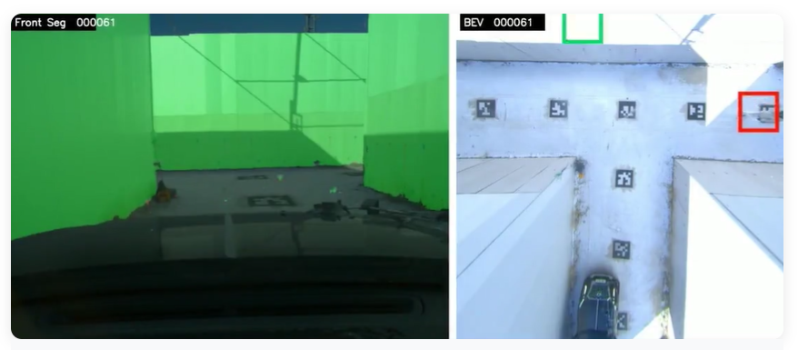

NLoS
We study ~.

About ARIL
The Autonomous Robot Intelligence Lab (ARIL) at Seoul National University is a research group driven by the belief that robots will play an increasingly important role in future society.
The emergence of deep learning in the 2012 ImageNet Challenge (ILSVRC), the impact of AlphaGo in 2016, and the widespread shift toward contactless lifestyles during the COVID-19 pandemic in 2020 have all highlighted the growing need for robotic systems in everyday life.
Meanwhile, the increasing availability of sensor data, the declining cost of computing resources such as CPUs and GPUs, and rapid advances in deep learning algorithms have further accelerated the arrival of the robotics era.
Despite this momentum, many challenges still remain before robots can seamlessly live and work alongside humans. Robots still struggle with navigation, often fail to transfer reliably from simulation to the real world, and are still limited in their understanding of human language. We believe that addressing these problems step by step can lead to significant social impact.
At ARIL, we view robots as artificial agents that sense, think, and act, much like humans do. Based on this perspective, we conduct research in autonomous driving mobility, delivery robots, conversational artificial intelligence, and digital manufacturing, while building practical expertise through hands-on robotic system development.
Our main publication venues include leading international journals such as IEEE Transactions, major robotics conferences such as ICRA and IROS, and top-tier machine learning and computer vision conferences including NeurIPS, ICML, ICLR, CVPR, ICCV, and ECCV.
#mapping #localization #pathplanning #objecttracking #lanedetection #NLP #audio #multimodal
Research Direction
Physical Simulator
VLA, A Vision-Language-Action (VLA) framework that navigates toward the optimal spatial configuration for task execution by leveraging spatial constraints and multi-modal sensor inputs.
HY
Multimodal Sensor
BG
mmWave radar based NLoS Object Detection
Neural Network based point segmentation
E2E NLoS control
JH
On-going Project
On-Device AI Technology Development and Optimization for Smart TV Platforms, LG Electronics
Members
Publications



Seminar
News
Alumni
Acknowledgement
We thank our collaborators, lab members, and funding agencies for their support.